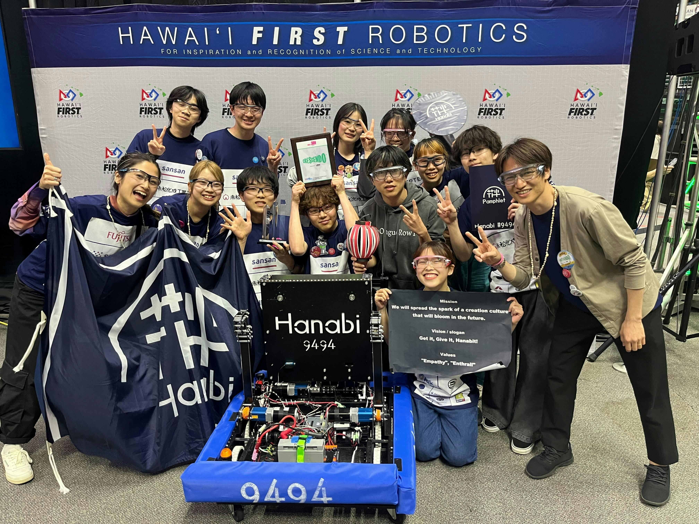
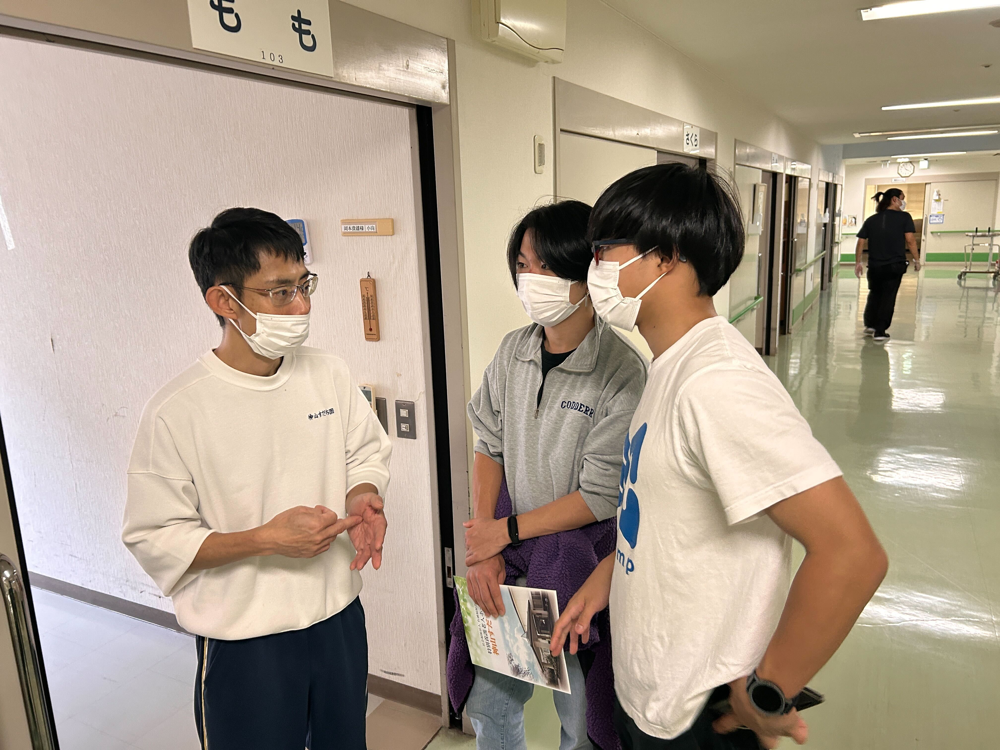

27,000,000円
スポンサー資金を獲得
My Purpose
ABOUT
神山まるごと高専1期生。
完璧な計画よりも、仮説を立てて試作し、失敗しながら改善していくことを大切にしています。
得意なのは、人を頼って巻き込みながら前に進めること。
「まず動いて、検証して、改善する」を徹底しています。
現場の声を聞いて、改善して、また現場に行く、というサイクルを回すことで、根拠のない自信を確信に変えてきました。
27,000,000円
スポンサー資金を獲得
0→1
高専祭初の花火企画を実現
現場起点
介護ヒアリングからAR×AIを開発
LEARNINGS FROM ACTION
これまでの活動で共通してきたのは、課題を見つけたらまず現場で声を集め、 小さく試して改善しながら成果に変えていく姿勢です。以下は、実際に取り組んだ中で 自分が得た学びと、形にしてきたアウトプットです。
学び 1
机上で考える前に、関係者ヒアリングや現場観察を優先。 介護領域では、課題の解像度を上げることで「本当に必要な体験」から逆算して企画を組み立てました。
アウトプット: ヒアリング設計 / 課題仮説の言語化 / 企画コンセプト
学び 2
高専祭の花火企画では、クラファン設計や行政・業者との調整までを担い、 反対意見も含めて対話しながら実施まで持っていきました。
アウトプット: 実行計画 / 調整資料 / 安全運営フロー
学び 3
スポンサー営業では提案と交渉を改善し続け、2年間で2,700万円を獲得。 結果だけでなく、うまくいった型を言語化してチームにも共有してきました。
アウトプット: 提案改善ログ / 交渉ナレッジ / チーム運用の型化
PROJECTS

国際ロボコン挑戦のための資金調達を担当。提案資料の作成から企業訪問、交渉までを一貫して行い、2年間で合計2,700万円のスポンサー資金を獲得しました。

「みんなで1つの思い出作り」を目指し、打ち上げ花火企画を立案。クラウドファンディングの設計、煙火業者・消防団・県との調整までを担当し、初の花火打ち上げを実現しました。

これから必ず社会に求められる介護のスポットワークを可能にするAR商品を開発中。メンバー集めからコンセプト設計、施設へのヒアリングをリードしています。
プログラミングの教育格差をなくすため、学校・イベント会場・ショッピング施設にてSTEMのイベントを開催。未来のエンジニア育成に貢献しました。
現場運営 / マネジメント地域の祭り運営に関わり、企画のアイデア出しや当日の運営を担当。場づくりの難しさと楽しさを学びました。
現場運営高専プロコンに出場し、チームリーダーを担当。アイデア出し・資料作成を行い、本戦である全国大会進出を果たしました。
プロダクト開発 / リーダーWORKS
介護の三大介助の一つである排泄介助に着目し、 過去の排泄ログや生活リズムから次の排泄タイミングを予測するAI。 新人や少人数体制でも、先回りした対応ができることを目指しています。
既存のLLMをベースに阿波弁→標準語変換ができるようチューニング。 介護現場で、新人スタッフが既存スタッフや入居者との 方言コミュニケーションにつまずく課題の解消を狙っています。
介護現場の業務工程を分析するAI。これによりその状況に適した行動の表示を可能にし、 経験差による判断のばらつきを減らし、介護の質を担保することを目指しています。
MEDIA

CONTEST
高専起業家サミット2026にて、アイデア部門で優秀賞を受賞しました。
サイトを見る
CONTEST
codellの活動でBronze賞を受賞しました。
サイトを見る2026.03.23
DCONの取り組みについて取材いただいた記事です。
PDFを見る2026.04.01
活動内容や挑戦について掲載いただいた特集記事です。
PDFを見るCONTEST
FRCにてRookie Inspiration Award賞を受賞しました。
サイトを見る